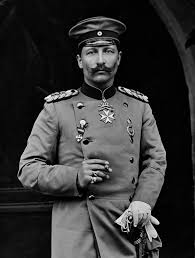
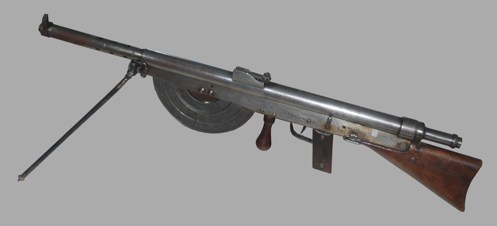
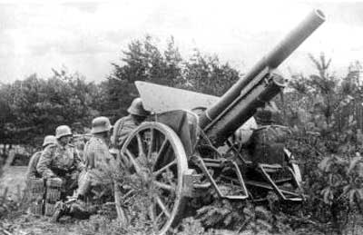

Leaders
Kaiser Wilhelm II
Hot-tempered, military-minded ruler of German empire and kingdom of Prussia; increasingly suspicious of motives of Britain, France and Russia.
David Lloyd George

Chancellor of exchequer since 1906; against his earlier inclinations, in 1914 he became a leading proponent of military action against Germany.
archduke franz ferdinand of austria

Chancellor of exchequer since 1906; against his earlier inclinations, in 1914 he became a leading proponent of military action against Germany.
Weapons
Rifles

The rifles most commonly used by the major combatants were, among the Allies,
- Berdan M1870.
- Gras M1874.
- Mauser M1887.
- Mosin–Nagant M1891.
- Peabody–Martini–Henry M1874.
Machine Guns
Most machine guns of World War 1 were based on Hiram Maxim's 1884 design. They had a sustained fire of 450–600 rounds per minute, allowing defenders to cut down attacking waves of enemy troops like a scythe cutting wheat. There was some speculation that the machine gun would completely replace the rifle.
- Chauchat M1915.
- Colt–Browning M1895/14.
- Hotchkiss M1909.
- Hotchkiss M1914.
- Lewis M1914.
- Maxim M1911.
Flame Throwers

On July 30, 1915, flamethrowers were used effectively against British positions to flush soldiers out of their trenches and into the open. The flamethrower, like poison gas, was a psychologically terrifying weapon, leading to its use by the German Army in more than 300 battles in the war.
Poison Gas

It is estimated that as many as 85% of the 91,000 gas deaths in WWI were a result of phosgene or the related agent, diphosgene (trichloromethane chloroformate). The most commonly used gas in WWI was 'mustard gas' [bis(2-chloroethyl) sulfide]. ... Most gas was delivered by artillery shells.
Artillery
The artillery of World War I led to trench warfare, was an important factor in the war, influenced its tactics, operations, and incorporated strategies that were used by the belligerents to break the stalemate at the front. World War I raised artillery to a new level of importance on the battlefield.